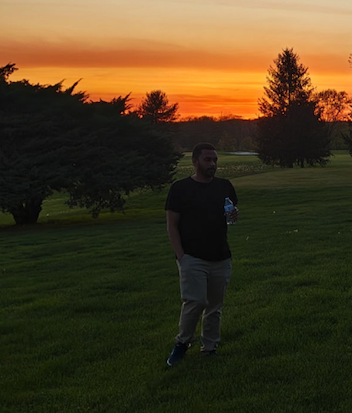

Trisha
Project Manager
My name is Trisha & I’m a sophomore in Information Systems at VCU. I love spending time with my friends and family, trying new foods, and exploring the outdoors.
As Project Manager, I was responsible for managing deadlines, keeping the team on track for each task, and reviewing our progress.
Madina Inagamova
Front-End Developer & Back-End Developer
My name is Madina. I'm a junior majoring in Information Systems at VCU.
I developed the back-end logic for the Movie Finder app and contributed to the front-end
structure and functionality, ensuring the search feature and overall
user experience worked smoothly.
Phelton Payne
Front-End Developer
My name is Phelton Payne and I’m a sophomore Information Systems major. In my free
time, I enjoy working on own quality brand clothing brand named Phine.
I also sing and enjoy theater! As front-end developer, I made sure the search
buttons and movie results were intuitive and easy to use.
My job was to transform the backend data into a clean, responsive,
and engaging experience for everyone.

Asim
Quality Assurance Analyst
My name is Asim Adam and I am a junior Information Systems major at VCU. I’m a Real Madrid fan (soccer team), and I like chess.
I speak 3 languages and have been to Africa, Asia, North America and Europe. I ensured validity of code that is
coded by Madina & Phelton.